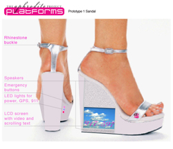

Aphrodite, sex worker, prostitution, sandals, shoes, GPS, APRS, LCD screen, tracking Platforms, the latest series of work in the ongoing Aphrodite Project, is an interactive, wearable device that is both a conceptual homage to the cult of the Greek goddess Aphrodite, as well as a practical object for the contemporary sex worker. An integrated system of shoes and online services, Platforms uses the latest technology to improve the working conditions of sex workers. Implicit in this gesture is an acknowledgement of sex work as comparable to those socially and culturally esteemed public professions that likewise engage risk in order to serve a particular community's needs.
Abstract As an artist I have explored female sexuality and its contrary relationship to contemporary culture. The Aphrodite Project, which I began in 2000, took me to Cyprus on a Fulbright Fellowship to explore the cult of Aphrodite in both antiquity and present-day contexts. Early on during my research I discovered that in addition to Aphrodite's well-known association with the control of human love, she was worshipped, by both men and women, due to her influence over nature, fertility, seafaring, and civic harmony, as well as raw sexuality. Aphrodite had temples across the ancient world, and her priestesses would often perform sexual acts in homage to her, and as a sacrifice for the fertility of the land and its people. Because Aphrodite's power was broad in scope, the sacred prostitution of her priestesses was intrinsically tied to religion, ritual, and public policy. It was seen as a social service and legitimate commerce. It was practiced openly at places of worship, and was taxed and legislated, making prostitutes a vital part of city life. There are numerous references that describe the prostitute-priestesses and hetairai of antiquity as beautiful women bedecked in fine clothes and jewels. One of the most compelling is the description of their sandals, which would leave footprints with "Follow Me" written in the earth. The Aphrodite Project: Platforms is an interactive artwork created for modern day prostitutes who work the streets. The main components of Platforms are sandals that combine the rich mythology of Aphrodite with the concerns of contemporary streetwalkers: safety, advertising/promotion, and community. The sandals are a sexy yet practical platform-style shoe large enough to accommodate an LCD color screen. As well, the shoes contain the requisite electronics for safety and communications features. The shoes come with video artwork that features pink roses, rock doves, the Cypriot landscape and other imagery related to Aphrodite. These videos can later be personalized by the wearer. A video overlay with a phone number, email address, and other customizable graphics is included for promotion. Each shoe also has a speaker in the back of the heel, which plays audio tracks of environmental phenomena associated with Aphrodite: the sound of the ocean at Petra tou Romiou (Aphrodite's birthplace), the waterfall from the Baths of Aphrodite in Cyprus, the cooing of pigeons and other birds. Audio and visual media, such as new heel tones, will be downloaded from the Platforms website, in a similar manner to downloading cell phone ring tones. One of the main concerns of contemporary urban sex workers, even in areas where prostitution is legal, is violence. Each sandal will have an audible alarm system, which emits a piercing noise to scare off attackers. The shoes are also outfitted with a built in GPS receiver and an emergency button that relays both the prostitute's location and a silent alarm signal to public emergency services. Where prostitution is illegal and/or there are problematic relations with law enforcement, i.e. in most places, the shoes will relay the signal to sex workers' rights groups, such as PONY or COYOTE in the US, HYDRA in Germany or SWEAT in South Africa. Because the shoes are specifically designed to help both sex workers and sex workers' rights organizations, I am speaking with sex workers and as many of their advocates as possible to assess the actual needs of these user groups in urban areas. The shoes will transmit their location via GPS and APRS (Automatic Position Reporting System) originally developed by Bob Bruninga, US Naval Academy Satellite Lab, in the late 1970s. APRS uses amateur radio to transmit position reports, weather reports, and messages between users. It is free and open to the public, and used by police officers, fire fighters, and other public service workers across the country to track their locations online. Using APRS brings sex workers on par with other public workers, whose lives are valued highly because they work in dangerous professions that serve the needs of the community. GPS receivers typically function better outside of developed areas. To augment the GPS/APRS system, the shoe design will also incorporate cell phone-based tracking technology. Companies like Rave Wireless (www.ravewireless.com) have developed tracking methods that utilize cell phone signals to provide reliable positioning indoors and in urban environments. These tracking systems are being implemented at colleges across the country, including the New Jersey Institute of Technology, the University of South Florida and the City University of New York's Baruch College, to ensure the safety of students. The online component of Platforms is a website that will provide sex workers with a basic email client, calendar, "problem client" blog, chat rooms and an area for downloading audio and video for the shoes. There will also be a link on the website to track the user's shoes (and other registered sex workers with transmitters) via the APRS system. This will be a secure community network that protects the privacy of its users. Tracking is voluntary, and can be turned on or off at any time. Each sex worker will have their own login to program their shoes, access email, and post information on problem customers. Workers can also track customers, set up appointments, create schedules, and access health and other resources. Platforms is designed to question moral attitudes and value judgments, especially with this marginalized section of the population: Who gets new technology and when? What is the true value of sexual services? Using an archetypal model, is it possible to reclaim the profession for modern women? What are the ethics of surveillance and tracking? Is it possible to ensure that this information will empower and not endanger sex workers? Is it ever possible to guarantee that knowledge will stay within the hands of those who it is intended for? The shoes address creativity and artmaking as well as practical issues of design and marketability. It is my hope that in addition to creating beautifully crafted objects, the project will contribute to the current international debate over the regulation, decriminalization, and legalization of prostitution. Andrew Milmoe Platforms is a collaboration with Andrew Milmoe, a physical computing expert (www.milmoe.com), and is being developed during an artist's residency at the Eyebeam Art and Technology Center in New York (www.eyebeam.org). Together we created a prototype that demonstrates the shoe's features and can be displayed in a gallery setting. A second prototype with functionality is in development, along with a video demo that will explain the Platforms system of integrated shoes and online services. URLS:
The Aphrodite Project website Norene Leddy portfolio Andrew Milmoe portfolio |